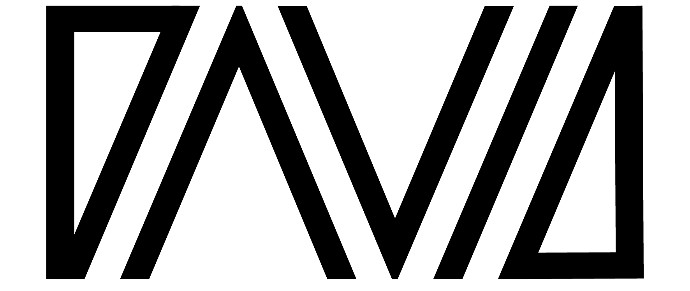
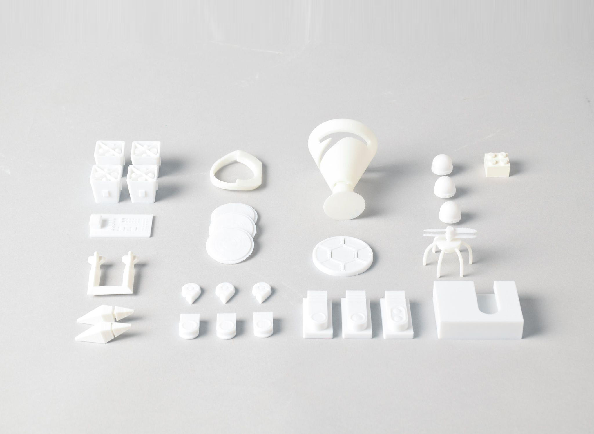
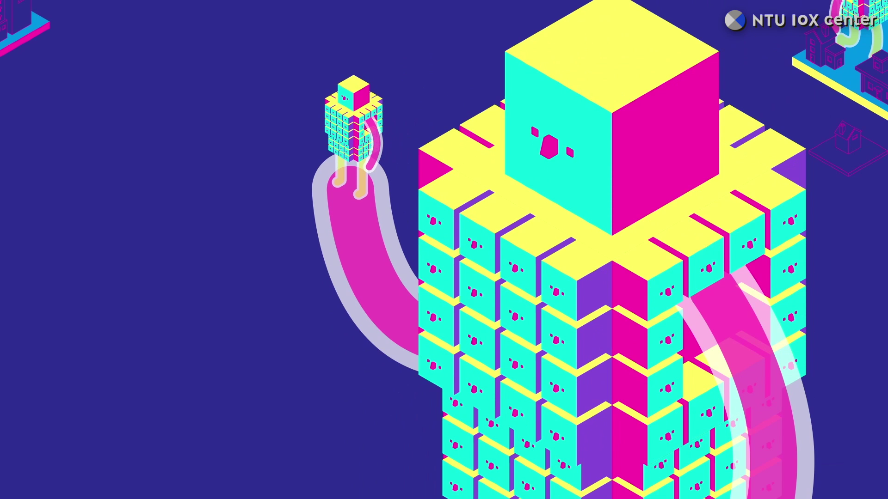
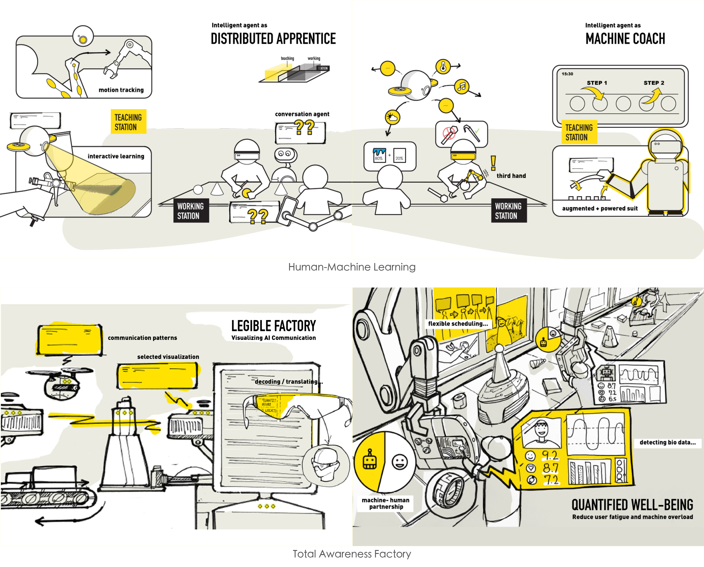
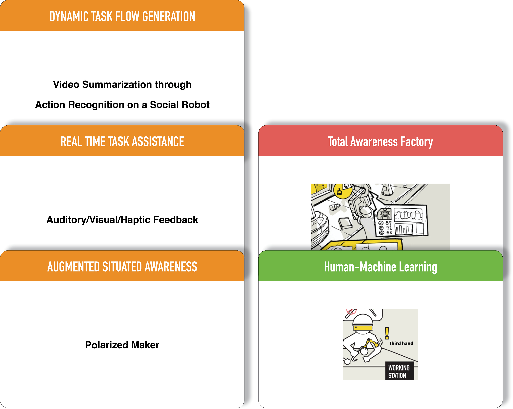
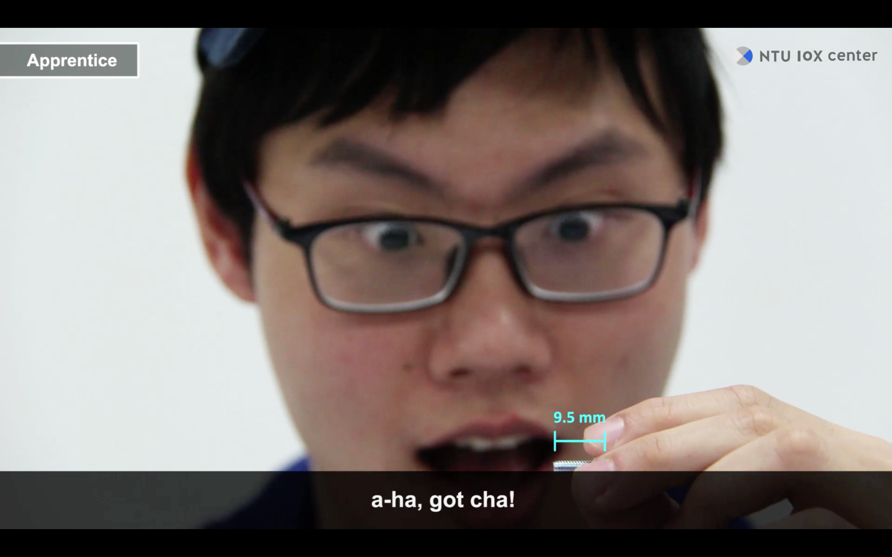
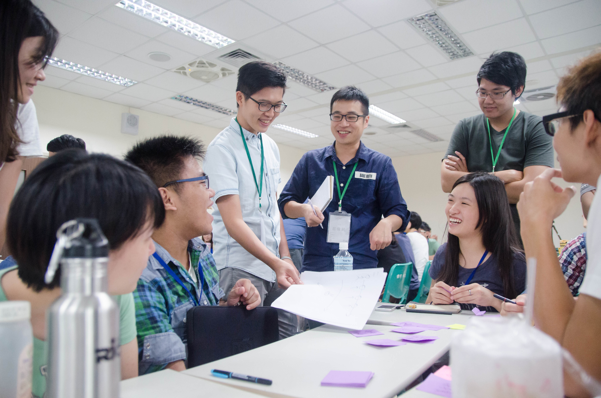

Wei-Ming ChungPublication
Experience
Design Project
Exhibition & Award
Curriculum Vitae
Portfolios
Google Scholar
Design Project
Constructing Knowledge for Creativity with Designerly Tools
Constructing knowledge for technology imagination with designerly tools is an attracting increasing interest in HCI. As a Ph.D. researcher at National Taiwan University of Science and Technology (NTUST) and the NTU IoX Center, I collaborated with Prof. Liang and so many brilliant designers and design researchers. We have developed four designerly tools, that were Interaction Tarot ([web link]; Chung and Liang, 2015; Chung and Liang, 2015; Chung and Liang, 2015; Chung, 2017), Once Upon a Future ([web link]; Cheng et al. 2018; Chung and Liang, 2021), Speculative Kits (Tsai et al., 2020), and Soundscape Fiction (Chung et al., 2020), to support creative cross-domain collaborations.
- Interaction Tarot: Making cards is constructing knowledge
- Once Upon a Future: Staging auditory engagements and recapping audio fictions assist in the generation of fictional reality
- Speculative Kits: Bodily understanding as a way for embodying knowledge 


Crafting Speculations for Technology Futures with Designerly Tools
We took design fiction as an approach to constructing fictional representations of future worlds around the emerging technologies in the NTU IoX Center since 2016. What I have done is to collaborate with different professions in the center and communicate interdisciplinary projects in a designerly way. To bridge epistemic differences within an interdisciplinary team, we presented Human Augmentation API film, story boards of smart factories, NTU IoX Center Capstone, and NTU IoX Center Capstone Deck. According to the complicated problem space in IoX project synergy, design considerations and nuanced rationales behind each decision making have been done in a visual way.
- Human Augmentation API: Motion graphics about HAAPI carve out discursive spaces toward the goal of a collective of beings 
- NTU IoX Center Capstone: Design proposals invite technology imagination around smart manufacturing 
- NTU IoX Center Capstone Deck: Composing visual representations supports possible world buildings 
- Data Collection Scenarios on Meccanoid Assembly: Acting constructs speculations 
- Soundscape Fiction: Situated listening as speculation
[film]
Directors of NTU IoX: Jane Yung-Jen Hsu and Bing-Yu Chen
Film Producers: Rung-Huei Liang and Lin-Lin Chen
Film concepts originated from Yi-Ping Hung (Collective Beings), Liwei Chan, and Rong-Hao Liang (Human Augmentation API)
Production Designers: David W. Chung, Yaliang Chuang, Yu-Ting Cheng, Ya-Han Lee, Wen-Wei Chang, Wilson Wang, and Cheng-Xun Yu
PI: Lin Lin Chen, Co-PI: Rung-Huei Liang, and design researchers: Yu-Ting Cheng, David Chung, Ya-Han Lee, Cheng-Xun You, Wilson Wang, Wen-wei Chang, Shu-Hsiang Chang, Guo-Ling Tsai, Hao-Hsiang Lin, Heng-An Lin, Joe WC Tsa
PI: Lin Lin Chen, Co-PI: Rung-Huei Liang, and design researchers: Yu-Ting Cheng, David Chung, Ya-Han Lee, Cheng-Xun You, Wilson Wang, Wen-wei Chang, Shu-Hsiang Chang, Guo-Ling Tsai, Hao-Hsiang Lin, Heng-An Lin, Joe WC Tsa
[film]
The core issues of the film includes (1) the ability gap between expert and apprentice, and (2) how IoX tech (e.g., machine learning) bridges the gap. Based on this, the film has been designed for further discussions about Data Collection in Intel Workshop (27 April, 2018).

PI: Rung-Huei Liang, Co-PI: Wenn-Chieh Tsai, and design researchers: Wei-Ming (David) Chung, Bowen Kong, MengChi Liu, Yin Huang, Fu-Chieh Chang.
Interdisciplinary Workshop Committee & Workshop Mentor In OpenHCI
I volunteered to co-organize the workshop, OpenHCI in 2012 and 2013. In 2014, 2015, and 2016, I were the workshop mentor, specializing in TA training, giving design critiques, and providing consultancy.
- 2015.07, Workshop lecturer & Steering Committee, the 6th Student-organized Workshop on Human-Computer Interaction, OpenHCI 2015: 喚體 Haunting Artifact, Taiwan
- 2014.07, Workshop lecturer & Steering Committee, the 5th Student-organized Workshop on Human-Computer Interaction, OpenHCI 2014: 延滯因子 Lagontology, Taiwan
- 2013.07, Sponsorship Committee, the 4th Student-organized Workshop on Human-Computer Interaction, OpenHCI 2013: 快步慢遊, Taiwan 